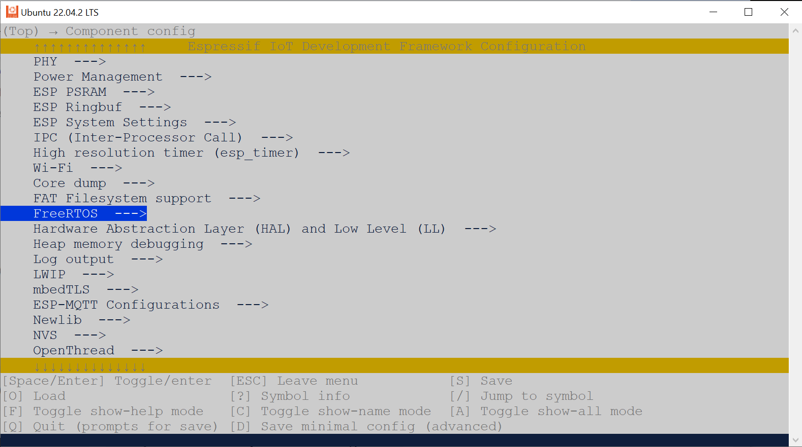

การใช้งาน VS Code IDE + PlatformIO + ESP-IDF (สำหรับ Linux)#
▷ VS Code IDE + PlatformIO Extension#
ซอฟต์แวร์ที่ใช้ในการเขียนโปรแกรมภาษา C/C++ สำหรับบอร์ดไมโครคอนโทรลเลอร์ ESP32 SoC ของบริษัท Espressif Systems มีให้เลือกใช้หลายตัวเลือก เช่น
- Arduino IDE + Arduino ESP32 Core
- VS Code IDE + Espressif ESP-IDF Extension
- VS Code IDE + PlatformIO Extension
PlatformIO เป็นซอฟต์แวร์ที่รองรับการเขียนโปรแกรมไมโครคอนโทรลเลอร์ได้หลายตระกูล เช่น Arm Cortex-M Series และ RISC-V เป็นต้น จากหลายผู้ผลิต รวมถึง Espressif ESP32 SoC Series
บทความนี้นำเสนอตัวอย่างการใช้งานซอฟต์แวร์ VS Code IDE + PlatformIO โดยได้ลองใช้เวอร์ชัน v6.1.1 (2023-08-31) สำหรับระบบปฏิบัติการ Linux / Ubuntu 22.04 และนำมาใช้ในการเขียนโค้ดในภาษา C/C++ ด้วย API ของ ESP-IDF - Espressif IoT Development Framework เพื่อใช้งานกับบอร์ดไมโครคอนโทรลเลอร์ ESP32
ขั้นตอนการติดตั้ง PlatformIO Extension สำหรับ VS Code IDE ดูรายละเอียดได้จาก "PlatformIO IDE for VS Code - Installation"
ข้อสังเกต: การใช้งาน VS Code IDE + PlatformIO สำหรับ Linux มีตัวเลือกหลายกรณี
- การใช้งาน Linux Ubuntu ในรูปแบบของ Virtual Machine สำหรับระบบปฏิบัติการ Windows (เช่น ใช้งานร่วมกับ Oracle VirtualBox)
- การใช้งาน WSL2 + Ubuntu สำหรับระบบปฏิบัติการ Windows
- การใช้งาน Linux Ubuntu แบบ Native
▷ PlatformIO for ESP32#
ซอฟต์แวร์ PlatformIO
รองรับการเขียนโปรแกรมสำหรับ ESP32 ด้วยภาษา C/C++ ในส่วนนี้เรียกว่า
"Platformio-esp32"
หรือ platform-espressif32 (ลองใช้เวอร์ชัน v6.4.0, released August 31, 2023)
และมีสองรูปแบบในการเขียนโค้ด คือ
- การเขียนโค้ด C/C++ ด้วย Arduino Framework ซึ่งสามารถใช้แทนที่ตัวเลือก Arduino IDE + Arduino ESP32 Core ได้
- การเขียนโค้ด C/C++ ด้วย Espressif ESP-IDF Framework
ในขณะที่เขียนบทความนี้ เวอร์ชันล่าสุดของ Arduino ESP32 Core ที่รองรับการใช้งานโดย Platformio-esp32 คือ v2.0.11 (based on ESP-IDF 4.4.5) และเวอร์ชันล่าสุดของ ESP-IDF คือ ESP-IDF v5.1.1
Platformio-esp32 รองรับบอร์ด ESP32 หลายรุ่น และสามารถดูรายการบอร์ด ESP32 ที่เกี่ยวข้องได้จากหน้าเว็บ "ESP32 Hardware Support by Platformio-esp32" และนำเสนอเป็นตัวอย่าง เช่น
- ESP32
- ESP32-C3
- ESP32-S3
▷ ขั้นตอนการดำเนินการ#
การเริ่มต้นใช้งาน VS Code IDE + PlatformIO IDE มีขั้นตอนดังนี้
- เปิดใช้งาน VS Code IDE
- เปิดใช้งาน PlatformIO (PIO)
- อัปเดต PlatformIO Core (โดยเลือกจากเมนู Upgrade PlatformIO Core)
- เปิดหน้า PIO Home > Open
- สร้างโปรเจกต์ใหม่ในส่วนที่เรียกว่า Project Wizard
- ระบุชื่อโปรเจกต์ใหม่ (Project Name)
- เลือกบอร์ด ESP32 ที่ต้องการใช้งาน
- เลือกรูปแบบการเขียนโค้ดสำหรับ ESP32 โดยเลือก ESP-IDF Framework
- เลือกไดเรกทอรีสำหรับโปรเจกต์ (Project Location)
- เปิดไดเรกทอรีของโปรเจกต์ใหม่
- เปิดไฟล์
src/main.cเพื่อแก้ไขโค้ดตามตัวอย่าง - เปิดไฟล์
platformio.iniเพื่อตั้งค่าการใช้งานสำหรับโปรเจกต์
- เปิดไฟล์
รูป: เปิดใช้งาน VS Code IDE
รูป: Upgrade PlatformIO Core
รูป: เปิดหน้า PIO Home
รูป: ตั้งชื่อโปรเจกต์ที่ต้องการสร้างใหม่ และเลือกบอร์ด ESP32 จากรายการ (เช่น Wemos Lolin32 Lite)
รูป: เลือกรูปแบบการเขียนโค้ดเป็น ESP-IDF
รูป: กดปุ่ม Finish เพื่อทำขั้นตอนสร้างไฟล์สำหรับโปรเจกต์ใหม่
▷ ESP-IDF Programming: LED Blink Demo#
เมื่อได้สร้างโปรเจกต์ใหม่แล้ว ให้เปิดไฟล์ src/main.c ในไดเรกทอรีของโปรเจกต์
แล้วแก้ไขโค้ดตามตัวอย่างต่อไปนี้
ตัวอย่างนี้สาธิตการใช้คำสั่ง เช่น gpio_config(...) และ gpio_set_level(...)
เพื่อทำให้วงจร LED ซึ่งต่อกับขา GPIO-22 (ใช้เป็นเอาต์พุต)
บนบอร์ด WeMos Lolin32 Lite สลับสถานะลอจิกตามระยะเวลาที่กำหนดไว้
ฟังก์ชัน app_main() เปรียบเสมือนฟังก์ชัน main() ของโปรแกรมที่เขียนโค้ดด้วยภาษา C/C++
แต่เนื่องจากมีการใช้ FreeRTOS ฟังก์ชันดังกล่าวจึงทำหน้าที่เป็นฟังก์ชันของทาสก์หลัก
(Main Task) ของโปรแกรม
การหน่วงเวลาในการทำงานของทาสก์หลัก
จะใช้คำสั่ง vTaskDelay(...) ของ FreeRTOS API
โดยจะต้องระบุระยะเวลาเป็นตัวเลขจำนวนเต็ม และนับเวลาตามจำนวน RTOS Ticks
(เช่น ตั้งค่า 1 Tick เท่ากับ 1 มิลลิวินาที เป็นต้น)
#include <stddef.h>
#include "driver/gpio.h"
#include "freertos/FreeRTOS.h"
#include "freertos/task.h"
#define GPIO_LED (22)
#define GPIO_LED_PIN_SEL (1ULL << GPIO_LED)
static void init_led(void) {
gpio_config_t io_conf;
io_conf.mode = GPIO_MODE_OUTPUT;
io_conf.pin_bit_mask = GPIO_LED_PIN_SEL;
io_conf.intr_type = GPIO_INTR_DISABLE;
io_conf.pull_down_en = 0;
io_conf.pull_up_en = 0;
gpio_config( &io_conf );
}
void app_main() {
// Used to keep the state of LED.
int led_state = 0;
// Initialize GPIO pin for LED output.
init_led();
while (1) {
// Toggle the LED state.
led_state = !led_state;
// Set the GPIO output according to the LED state.
gpio_set_level( GPIO_LED, led_state );
// Delay the main task for 100 ticks.
vTaskDelay( 100 );
}
}
การตั้งค่าการใช้งานสำหรับ ESP-IDF Configuration สำหรับโปรเจกต์
สามารถดูหรือแก้ไขได้จากไฟล์ sdkconfig.* (จำแนกตามชื่อของ Environment) เช่น
sdkconfig.defaults(Default SDKConfig Settings)sdkconfig.lolin32_liteสำหรับบอร์ด Wemos Lolin32 Litesdkconfig.esp32devสำหรับบอร์ด Espressif ESP32 Dev Module
รูป: ตัวอย่างการตั้งค่าเพื่อกำหนดอัตรา FreeRTOS Tick Rate (เปลี่ยนค่าจาก 100 เป็น 1000 Hz)
ถ้าต้องการแก้ไขการตั้งค่าผ่าน Menu Config ก็สามารถใช้คำสั่งแบบ Command Line ได้ดังนี้
$ pio run -t menuconfig
ถัดไปให้เปิดและแก้ไขไฟล์ platformio.ini ของโปรเจกต์ ตามตัวอย่างดังนี้
; PlatformIO Project Configuration File
;
; Please visit documentation for the other options and examples
; https://docs.platformio.org/page/projectconf.html
[env:lolin32_lite]
platform = espressif32
; platform = espressif32 @ ^6.4.0
board = lolin32_lite
framework = espidf
upload_protocol = esptool
upload_speed = 921600
upload_port = /dev/ttyUSB0
monitor_speed = 115200
monitor_port = /dev/ttyUSB0
build_flags =
-D LED_BUILTIN=22
lib_extra_dirs =
~/Documents/PlatformIO/Projects/esp-idf-lib/components
คำอธิบาย
- ถ้าเริ่มต้นบรรทัดด้วย
;หมายถึง Comment Line platform = espressif32เลือกใช้platformio-esp32(development release)platform = espressif32 @ ^6.4.0เลือกใช้platformio-esp32แบบเจาะจงเวอร์ชันboard = lolin32_liteเลือกใช้บอร์ด Wemos Lolin32 Liteframework = espidfเลือกใช้รูปแบบการเขียนโค้ด ESP-IDF Frameworkupload_protocol = esptoolเลือกใช้วิธีการอัปโหลดเฟิร์มแวร์ไปยังบอร์ด โดยใช้โปรแกรมesptool.pyupload_speed = 921600กำหนดความเร็วในการอัปโหลดผ่านพอร์ต Serialupload_port = /dev/ttyUSB0เจาะจงเลือกใช้พอร์ต Serial เช่น/dev/ttyUSB0(สำหรับ Linux)monitor_speed = 115200กำหนดความเร็วของ Baudrate สำหรับ Serial Monitormonitor_port = /dev/ttyUSB0เจาะจงเลือกใช้พอร์ต Serial สำหรับ Serial Monitorbuild_flags =เพิ่มรายการ Build Flags ในบรรทัดถัดไป มีได้มากกว่าหนึ่งรายการlib_extra_dirs =เพิ่มรายการของไดเรกทอรีในบรรทัดถัดไป มีได้มากกว่าหนึ่งรายการ สำหรับ ESP-IDF Reusable Software Components หรือไลบรารีต่าง ๆ ที่ต้องการนำมาใช้ในโปรเจกต์
รูป: ตัวอย่างการเขียนโค้ดและทำขั้นตอน Build Project เพื่อคอมไพล์โค้ด
รูป: การอัปโหลดไฟล์เฟิร์มแวร์ด้วย esptool.py ไปยังบอร์ด ESP32
ที่เชื่อมต่อกับพอร์ต /dev/ttyUSB0
รูป: การเปิดใช้งาน Serial Monitor (Baudrate: 115200) เพื่อรับข้อความจากบอร์ด ESP32 ผ่านทาง USB-Serial
▷ Demo Code: ESP32 System Info#
โค้ดตัวอย่างถัดไป ซึ่งดัดแปลงแก้ไขจากโค้ดตัวอย่าง
get-started/hello_world/
สาธิตการใช้คำสั่งของ ESP-IDF เช่น
esp_chip_info(...) เพื่ออ่านข้อมูลเกี่ยวกับชิป ESP32
เช่น ขนาดของหน่วยความจำแฟลช (Flash Size) เวอร์ชันของชิป ESP32
(Silicon chip revision) เวอร์ชันของซอฟต์แวร์ ESP-IDF ที่ใช้ในการคอมไพล์โค้ด
เป็นต้น ข้อมูลเหล่านี้จะถูกแสดงเป็นข้อความส่งออกทาง Serial โดยใช้คำสั่ง printf(...)
#include <stddef.h>
#include <stdio.h>
#include <stdlib.h>
#include <inttypes.h>
#include "freertos/FreeRTOS.h"
#include "freertos/task.h"
#include "esp_system.h"
#include "esp_chip_info.h"
#include "esp_flash.h"
static void sys_info(void) {
esp_chip_info_t chip_info;
uint32_t flash_size;
esp_chip_info( &chip_info );
printf("%s chip with %d CPU core(s)\n",
CONFIG_IDF_TARGET, chip_info.cores );
printf("Hardware features: \n" );
printf( "- WiFi: %s\n", (
chip_info.features & CHIP_FEATURE_WIFI_BGN) ? "y":"n" );
printf( "- BLE: %s\n",
(chip_info.features & CHIP_FEATURE_BLE) ? "y":"n" );
printf( "- IEEE802.14.5/ZigBee/Thread: %s\n",
(chip_info.features & CHIP_FEATURE_IEEE802154) ? "y":"n" );
unsigned major_rev = chip_info.revision / 100;
unsigned minor_rev = chip_info.revision % 100;
printf( "silicon revision v%d.%d, ", major_rev, minor_rev );
if (esp_flash_get_size(NULL, &flash_size) != ESP_OK) {
printf("Get flash size failed");
return;
}
printf( "%" PRIu32 "MB %s flash\n",
flash_size / (uint32_t)(1024 * 1024),
(chip_info.features & CHIP_FEATURE_EMB_FLASH) ?
"embedded" : "external" );
printf( "Minimum free heap size: %" PRIu32 " bytes\n",
esp_get_minimum_free_heap_size() );
printf( "\n\n\n" );
fflush( stdout );
}
void app_main() {
printf( "ESP32 - ESP-IDF Demo...\n" );
while (1) {
sys_info();
vTaskDelay(4000 /*ticks*/);
}
}
รูป: ตัวอย่างข้อความเอาต์พุตที่ได้รับจากบอร์ด ESP32 ผ่านทาง USB-Serial
▷ การใช้งาน PIO แบบ Command Line#
การคอมไพล์โค้ดตัวอย่าง หรือการทำขั้นตอน Build Project
ด้วยวิธีการทำคำสั่งแบบ Command Line
โดยใช้คำสั่ง pio ซึ่งจะต้องมีการติดตั้ง PlatformIO Core / CLI
หรือ PlatformIO IDE ไว้แล้วในระบบ Linux มีแนวทางดังนี้
การติดตั้ง Platform Core / CLI ทำได้หลายวิธี เช่น การดาวน์โหลดไฟล์
Python Installer Script for PIO
แล้วรันสคริปต์ เพื่อติดตั้งโปรแกรม โดยจะมีการติดตั้งไว้ใน Python Virtual Environment สำหรับ PlatformIO
ภายใต้ไดเรกทอรี ~/.platformio/penv/
# Download the Python installer script
$ PIO_SCRIPT=https://raw.githubusercontent.com/platformio/
$ PIO_SCRIPT=$PIO_SCRIPT/platformio-core-installer/master/get-platformio.py
$ wget -O get-platformio.py $PIO_SCRIPT
# Run the installer script
$ python3 get-platformio.py
การทำคำสั่งตรวจสอบเวอร์ชันและอัปเกรด PIO
# Activate the Python virtual environment for PIO Core
$ source ~/.platformio/penv/bin/activate
# Upgrade the PIO core
$ pio upgrade
# Check the version of the PIO Core
$ pio --version
PlatformIO Core, version 6.1.11
ถัดไปให้ดาวน์โหลดไฟล์สำหรับ platform-espressif32 จาก Github
ซึ่งมีโปรเจกต์ตัวอย่างภายใต้ไดเรกทอรี examples/ และทดลองทำขั้นตอน Build Project
เช่น
examples/arduino-blink(โค้ด Arduino Sketch)examples/espidf-arduino-blink(โค้ด Arduino Sketch แต่ใช้คำสั่งของ ESP-IDF)examples/espidf-hello-world(โค้ดตัวอย่างสาธิตการใช้คำสั่งของ ESP-IDF)
# Change to the user's home directory.
$ cd ~/
# Clone the platformio/platform-espressif32 repository
$ git clone https://github.com/platformio/platform-espressif32
# Change directory to example
$ cd platform-espressif32/examples/arduino-blink
ถ้าลองดูในไฟล์ platformio.ini ภายใต้ไดเรกทอรีของโปรเจกต์
จะมีพบว่า มีรายการบอร์ดที่มีการตั้งค่าไว้ (ระบุชื่อ Environment Names) และเลือกใช้งานได้ ดังนี้
esp32-s3-devkitc-1esp32doit-devkit-v1arduino_nano_esp32esp-wrover-kitlolin_c3_minilolin32
ในไดเรกทอรีของโปรเจกต์ที่เป็นตัวอย่าง ให้ตรวจสอบดูการตั้งค่าในไฟล์ platformio.ini ด้วย
เช่น ชื่อของ Environment ที่เลือกใช้ได้ (esp32dev, lolin32, ...)
# Build project for a specific environment (e.g. lolin32)
$ pio run -e lolin32
# Upload firmware for the specific environment (e.g. lolin32)
$ pio run -e lolin32 --target upload
# Clean build files
$ pio run --target clean
รูป: ตัวอย่างการทำคำสั่ง pio แบบ Command Line เพื่อคอมไพล์โค้ดตัวอย่าง
arduino-blink
รูป: ตัวอย่างการทำคำสั่ง pio เพื่ออัปโหลดไฟล์เฟิร์มแวร์ไปยังบอร์ด ESP32 โดยใช้ esptool
ผู้ใช้สามารถเปิดใช้งาน VS Code IDE สำหรับโปรเจกต์ของ PIO ได้เช่นกัน
โดยทำคำสั่ง code . ภายใต้ไดเรกทอรีของโปรเจกต์ เพื่อเรียกใช้ VS Code IDE
รูป: ตัวอย่างการใช้งาน VS Code IDE สำหรับโปรเจกต์ของ PIO และทำขั้นตอน Build Project
รูป: ตัวอย่างการทำขั้นตอน Upload firmware
สำหรับผู้ใช้ Linux: แนะนำให้ทำขั้นตอนติดตั้งไฟล์ 99-platformio-udev.rules
(Installation of udev rules for PlatformIO supported boards/devices)
▷ การสร้างโปรเจกต์ใหม่โดยใช้คำสั่ง PIO แล้วเปิดใช้งานด้วย VS Code IDE#
ถัดไปเป็นการลองทำคำสั่งแบบ Command Line โดยเรียกใช้คำสั่ง pio
เพื่อสร้างโปรเจกต์ในไดเรกทอรีที่ถูกสร้างขึ้นใหม่ และสร้างไฟล์ต่าง ๆ สำหรับการเริ่มใช้งานด้วย PlatformIO
# Create a directory for the new project.
$ mkdir -p ~/Documents/PlatformIO/Projects/espidf_aht20_demo
# Change the working directory to the project directory.
$ cd ~/Documents/PlatformIO/Projects/espidf_aht20_demo
# Create a new PIO project for the Wemos Lolin32 Lite board.
$ pio project init \
--project-dir . \
--board "lolin32_lite" \
--project-option "framework=espidf" \
--ide "vscode"
# Show the project directory structure.
$ tree -L 2 .
.
├── CMakeLists.txt
├── include
│ └── README
├── lib
│ └── README
├── platformio.ini
├── sdkconfig.lolin32_lite
├── src
│ ├── CMakeLists.txt
│ └── main.c
└── test
└── README
4 directories, 8 files
# Change the ESP-IDF options for a PlatformIO project.
$ pio run -t menuconfig
รูป: การทำคำสั่ง pio เพื่อสร้างโปรเจกต์ใหม่
รูป: การทำคำสั่ง pio run -t menuconfig
เพื่อเปลี่ยนแปลงการตั้งค่าให้กับ Software Components

รูป: เลือก FreeRTOS เพื่อแก้ไขการตั้งค่า
รูป: กำหนดค่า configTICK_RATE_HZ
เมื่อแก้ไขการตั้งค่าแล้ว ให้กดปุ่ม S (Save) และ Q (Quit)
เพื่อบันทึกการเปลี่ยนแปลงลงในไฟล์
ถัดไปเป็นการเปิดใช้งาน VS Code IDE สำหรับโปรเจกต์ที่ได้สร้างขึ้นใหม่
# Start VS Code IDE and open the current directory.
$ code .
ถัดไปเป็นการทดลองใช้งานไลบรารีที่มีชื่อว่า
esp-idf-lib
โดยจะต้องมีการดาวน์โหลดไฟล์ของไลบรารีดังกล่าวจาก Github
$ cd ~/Documents/PlatformIO/Projects/
$ git clone https://github.com/UncleRus/esp-idf-lib \
~/Documents/PlatformIO/Projects/esp-idf-lib
esp-idf-lib รองรับอุปกรณ์เซนเซอร์ต่าง ๆ หลายชนิด ซึ่งดูได้จากโครงสร้างภายใต้ไดเรกทอรี components
$ cd ~/Documents/PlatformIO/Projects/esp-idf-lib
$ tree -L 1 ./components/
./components/
├── ads111x
├── ads130e08
├── aht
├── am2320
├── bh1750
├── bh1900nux
├── bme680
├── bmp180
├── bmp280
├── button
├── calibration
├── ccs811
├── color
├── dht
├── dps310
├── ds1302
├── ds1307
├── ds18x20
├── ds3231
├── ds3502
├── encoder
├── esp_idf_lib_helpers
├── example
├── framebuffer
├── hd44780
├── hdc1000
├── hmc5883l
├── ht16k33
├── hts221
├── hx711
├── i2cdev
├── icm42670
├── ina219
├── ina260
├── ina3221
├── l3gx
├── lc709203f
├── led_strip
├── led_strip_spi
├── lib8tion
├── lm75
├── ls7366r
├── lsm303
├── max1704x
├── max31725
├── max31855
├── max31865
├── max7219
├── mcp23008
├── mcp23x17
├── mcp342x
├── mcp4725
├── mcp960x
├── mcp9808
├── mhz19b
├── mp2660
├── mpu6050
├── ms5611
├── noise
├── onewire
├── pca9557
├── pca9685
├── pcf8563
├── pcf8574
├── pcf8575
├── pcf8591
├── qmc5883l
├── rda5807m
├── scd30
├── scd4x
├── sfa3x
├── sgm58031
├── sgp40
├── sht3x
├── sht4x
├── si7021
├── sts21
├── sts3x
├── tca6424a
├── tca9548
├── tca95x5
├── tda74xx
├── tsl2561
├── tsl2591
├── tsl4531
├── tsys01
├── ultrasonic
├── veml7700
└── wiegand
89 directories, 0 files
ถัดไปเป็นโค้ดตัวอย่างเพื่อลองใช้งานไลบรารี aht สำหรับอุปกรณ์เซนเซอร์
AHT2x (Temperature & Relative Humidity Sensor)
เชื่อมต่อด้วยบัส I2C (เลือกใช้ขา GPIO-19 / GPIO-23 สำหรับ I2C_SCL / I2C_SDA
ตามลำดับ)
#include <stddef.h>
#include <stdio.h>
#include <stdlib.h>
#include <inttypes.h>
#include "freertos/FreeRTOS.h"
#include "freertos/task.h"
#include "esp_err.h"
#include "esp_log.h"
#include "aht.h" // for AHT2x
#define AHT_TYPE AHT_TYPE_AHT20
#define AHT_ADDR AHT_I2C_ADDRESS_GND
#define I2C_SCL 19
#define I2C_SDA 23
static const char *TAG = "aht20-demo";
void app_main() {
// Initialize the I2C device.
ESP_ERROR_CHECK( i2cdev_init() );
aht_t dev = {
.mode = AHT_MODE_NORMAL,
.type = AHT_TYPE,
};
// Initialize the AHT2x device
// using I2C0 and specified GPIO pins.
ESP_ERROR_CHECK( aht_init_desc(&dev, AHT_ADDR, 0, I2C_SDA, I2C_SCL) );
ESP_ERROR_CHECK( aht_init(&dev) );
// Get the AHT2x device status.
bool calibrated;
ESP_ERROR_CHECK( aht_get_status(&dev, NULL, &calibrated) );
if (calibrated) {
ESP_LOGI(TAG, "Sensor calibrated");
} else {
ESP_LOGW(TAG, "Sensor not calibrated!");
}
float temp, humid; // temperature and relative humidity values.
while (1) {
// Read the sensor data from the AHT2x device.
esp_err_t res = aht_get_data(&dev, &temp, &humid);
if (res == ESP_OK) {
printf( "Temperature: %.1f°C, Humidity: %.2f%%\n",
temp, humid );
} else {
printf( "Temperature: --.-°C, Humidity: --.--%%\n" ) ;
ESP_LOGE(TAG, "Error reading data: %d (%s)",
res, esp_err_to_name(res) );
}
vTaskDelay( pdMS_TO_TICKS(500) ); // Delay for 500 msec.
}
}
นอกจากนั้นแล้วจะต้องมีการแก้ไขไฟล์ platformio.ini ดังต่อไปนี้
[env:lolin32_lite]
platform = espressif32
board = lolin32_lite
framework = espidf
upload_protocol = esptool
upload_speed = 921600
upload_port = /dev/ttyUSB0
monitor_speed = 115200
monitor_port = /dev/ttyUSB0
build_flags =
-D CONFIG_I2CDEV_TIMEOUT=100
lib_extra_dirs =
~/Documents/PlatformIO/Projects/esp-idf-lib/components
รูป: การคอมไพล์โค้ดตัวอย่าง
รูป: ตัวอย่างข้อความเอาต์พุตใน Serial Monitor
รูป: ตัวอย่างการต่อวงจรทดลองใช้งานโมดูล AHT21
▷ กล่าวสรุป#
บทความนี้ได้นำเสนอการใช้งานซอฟต์แวร์ VS Code IDE ร่วมกับ PlatformIO เพื่อเขียนโปรแกรมภาษา C/C++ โดยใช้ Espressif ESP-IDF Framework สำหรับบอร์ดไมโครคอนโทรลเลอร์ ESP32
แนะนำบทความภาษาไทยที่เกี่ยวข้องให้ศึกษาเพิ่มเติม
- "แนะนำชิป ESP32"
- "การเขียนโปรแกรมไมโครคอนโทรลเลอร์ ESP32"
- "การใช้งาน VS Code IDE + PlatformIO Extension สำหรับการเขียนโค้ด Arduino"
- "การใช้งาน PlatformIO ร่วมกับ VS Code IDE สำหรับบอร์ด ESP32"
- "การใช้งาน PlatformIO (PIO) Core สำหรับ WSL2 Ubuntu ในเบื้องต้น"
- "การติดตั้งและใช้งาน ESP-IDF สำหรับ WSL / Ubuntu"
- "การใช้งาน VS Code IDE + Espresssif IDF Extension สำหรับ Windows"
- "การใช้งาน ESP-IDF (WSL2 / Ubuntu) สำหรับ ESP32-C6"
This work is licensed under a Creative Commons Attribution-ShareAlike 4.0 International License.
Created: 2023-10-30 | Last Updated: 2023-11-01